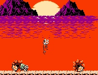
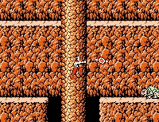

Rygar Improvement


Rygar Improvement |
|
A Map Editor for NES Rygar |
|
BackgroundRygar is one of my fondest memories from the early days of the NES. Every once in a while I still get the urge to pull out the cartridge and give it a spin. I can't get enough of the beautiful scenery, and that bizzarre but utterly kickass diskarmer the hero packs.  It was probably due to my fondness for the game that I was willing to sit down at my hex editor a couple months ago and begin the tedious process of trying to locate the map data. A couple days later all I had managed to do was screw up some tiles in the Rolsa Valley. I was unimpressed. I jotted down the addresses of those tiles in the Hacker's Database and let it drop for a month.  But it kept nagging at the back of my mind, and eventually I started poking around again. A day later I had located the Sueru Mountains and had the format completely figured out. Another week and I had my first three custom levels completed. But it wasn't much fun plugging away in a hex editor, and I posted a plea for help in making a level editor on the front page of Rage Games. A few days later I got an e-mail from Chris Hickman, the founder of Archaic Ruins. It turned out he had some C experience, and wanted to help. I gave him the data I'd found and a patch with my current edits. 72 hours after that he had a basic editor going. After that it was smooth sailing - only 3 complete overhauls to the editor on Chris' part and a week of almost nonstop work on my part grabbing and chopping up screenshots. We are pleased to present to you our level editor, Rygar Improvement, and even more pleased to be done with the project. Phew!
Designers' TipsIf you've ever used a level editor, you know that games are programmed to be run only with their original levels and may not work as well with anything else. Players can still use and enjoy your new maps, though, if you follow some basic rules:
User-Designed Worlds
Let's see what you can do! If you've done an edit for Rygar, E-mail me, and we'll make arrangements to get it posted here.
What You'll Need
Related Links
|
|
|